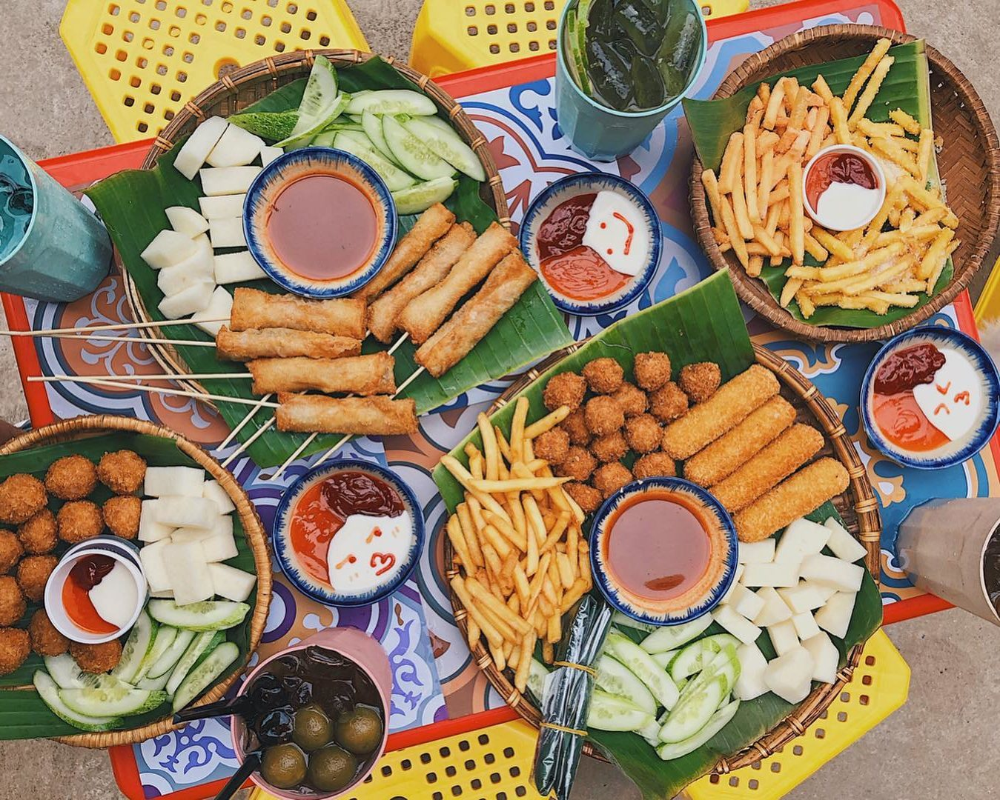
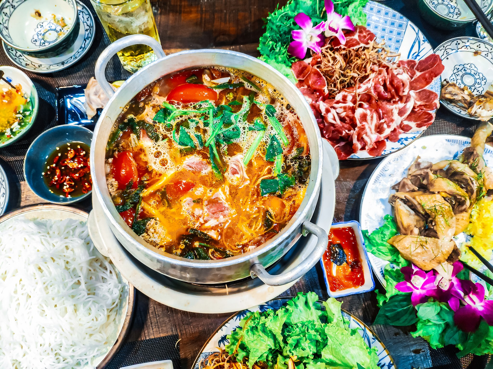
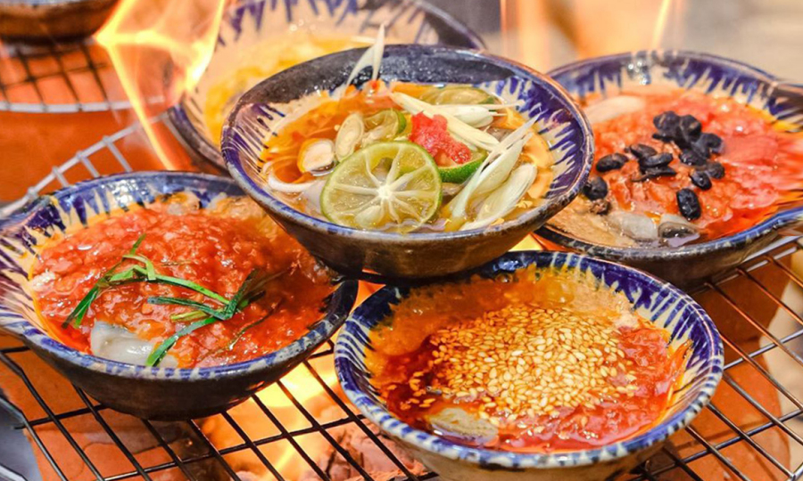
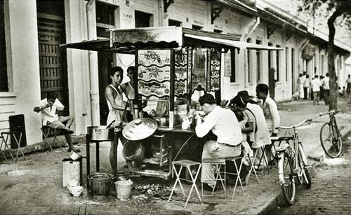
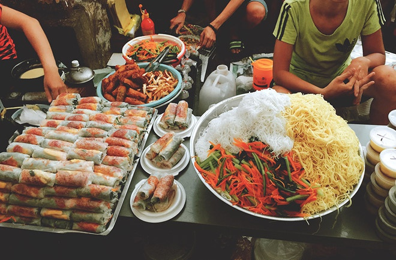
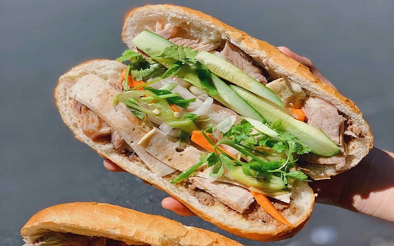
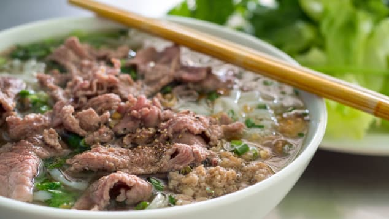
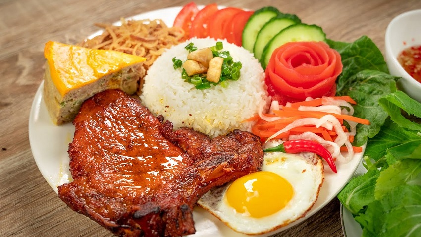
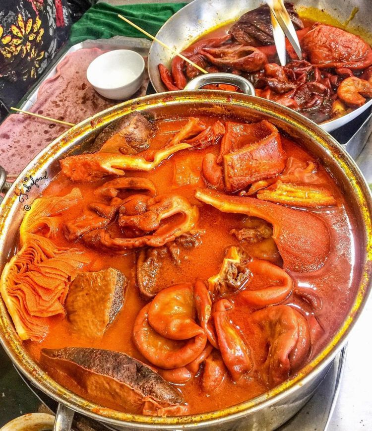

Nói đến khu vực sầm uất và phát triển bậc nhất ở Việt Nam về ẩm thực thì không thể bỏ qua được Thành phố Hồ Chí Minh - hay còn được biến đến là Sài Gòn. Một trong những điều đặc biệt khi nói về nơi đây chính là nền văn hóa ẩm thực lâu đời. Trong bài viết ngày hôm nay, chúng ta cùng dạo quanh một vòng để khám phá những tinh hoa trong nền ẩm thực Sài Gòn nhé!
I. Ẩm thực Sài Gòn đặc sắc, phong phú
Ẩm thực là một hệ thống đặc biệt về quan điểm truyền thống và thực hành nấu ăn, nghệ thuật bếp núc, nghệ thuật chế biến thức ăn, thường gắn liền với một nền văn hóa cụ thể.
Ẩm thực thường được đặt tên theo vùng hoặc nền văn hóa hiện hành. Một món ăn chủ yếu chịu ảnh hưởng của các thành phần có sẵn tại địa phương hoặc thông qua trao đổi, buôn bán.
Với ẩm thực của người Sài Gòn, đây không chỉ đơn giản là vấn đề ăn uống, chế biến thức ăn mà còn là tập tục, thói quen và văn hóa tinh thần của nhiều người. Sự sầm uất, nhộn nhịp và phát triển của Sài Gòn xưa và nay đã thu hút được rất nhiều người từ mọi miền đất nước đổ về, thậm chí còn ở người nước ngoài đến du lịch ở đây. Họ đến và mang theo những công thức đặc biệt về món ăn địa phương nơi họ sinh ra.
Không chỉ vậy, nền ẩm thực từ cá các nước trên thế giới bao gồm Trung Quốc, Nhật Bản, Hàn Quốc... và một số các quốc gia phương Tây khác đã có sự du nhập nền ẩm thực văn hóa vào Sài Gòn từ thuở xa xưa cho tới tận ngày nay. Chính vì những yếu tố khác quan này cũng với sự tiếp thu học hỏi, sáng tạo và phát triển nhiều phương thức khác nhau đã tạo nên nền ẩm thực Sài Gòn đặc sắc, phong phú như ngày nay.
II. Những đặc trưng trong văn hóa ẩm thực Sài Gòn
1. Sự giao thoa ẩm thực Sài Gòn
Nét đặc trưng về văn hóa ẩm thực tại thành phố hoa lệ bậc nhất Việt Nam được ví như một nồi lẩu thập cẩm. Nơi đây quy tụ và kết tinh rất nhiều xu hướng văn hóa không chỉ từ các địa phương khác mà còn có những quốc gia khác trên thế giới.
Sài Gòn được xem là trung tâm ẩm thực cho cả khu vực Đông Nam Bộ và là điểm giao thoa giữa Bắc - Nam, Đông - Tây. Từ những năm của thế kỷ 18 cho đến nay, khu vực Hòn ngọc Viễn Đông đã đón nhận những luồng văn hóa ẩm thực từ các nước khác như Trung Quốc, Ấn Độ, Pháp, Đức... Do đó, chỉ cần đặt chân tới vùng đất Sài Gòn, thực khách đã có thể trải nghiệm gần như toàn bộ những nền ẩm thực của các nước khác mà chẳng cần phải đi đâu xa.
2. Ẩm thực Sài Gòn xưa
Đến với thành phố nghỉ tại Việt Nam, bạn sẽ thấy một nơi hoành tráng, nguy ngoa và kiêu hãnh. Những tòa nhà chọc trời, những con đường đông nghịt người, hàng quán, phố xá mọc lên mọi nơi với đủ tất cả các hình thức kinh doanh.
Mặc dù phát triển hiện đại một cách vượt bậc so với các tỉnh thành khác trong cả nước nhưng Sài Gòn không mất đi những nét văn hóa truyền thống. Một Sài Gòn xưa luôn hiện lên trong mắt bao người với những ký ức tuổi thơ từ các món ăn dân dã, quen thuộc
Hủ tiếu là món ăn có nguồn gốc từ Trung Hoa, du nhập vào Việt Nam từ khá sớm tại Sài Gòn. Vị thanh mát, đậm đà, pha trộn cùng nhiều loại nguyên liệu đã làm nên tô hủ tiếu Sài Gòn gắn liền với con người nơi đây. Hình ảnh chiếc xe hủ tiếu mái che đơn so bốc khói nghi ngót dọc các vỉa hè, lề đường đã trở thành hình ảnh đi sâu vào kí ức của người dân Sài Gòn.
Bên cạnh đó, các món như phở Tàu bay, phá lấu... đều là hình ảnh gắn liền với người Sài Gòn. Đơn sơ, mộc mạc nhưng chứa chan các tình, trải qua biết bao thế hệ, từng ngày dõi theo sự trưởng thành và phát triển của nhịp sống hiện đại nơi thành phố sầm uất, hoa lệ.
3. Ẩm thực Sài Gòn ngày nay
Nếu nói đến ẩm thực của người Sài Gòn ngày nay, với những hội nhập và phát triển theo nhịp sống hiện đại, các món ăn cũng đã có sự chuyển mình không ngừng. Bên cạnh nền ẩm thực xưa cổ thì các món ăn đơn giản, hè phố thể hiện sự năng động, thu hút giới trẻ như bánh tráng trộn, bánh tráng nướng...
Bên cạnh đó, những con đường ăn uống tổng hợp các món ăn vặt, món ăn đường phố hay những đặc sản nổi tiếng của địa phương và quốc gia khác như trà sữa, há cảo, tokboky, bún thịt nướng... Chính vì sự đa dạng từ các món ăn truyền thống cho đến hiện đại cùng với những biến tấu độc đáo đã làm nên một nền ẩm thực Sài Gòn ngày nay vô cùng đồ sộ, độc đáo.
Văn hóa ẩm thực thành phố Hồ Chí Minh ngày nay cũng là một trong những điểm đặc sắc thu hút khách du lịch từ mọi nơi đổ về. Chính vì vậy, món ăn Sài Gòn không còn đơn giản là để ăn chơi hay làm no bụng mà ngày càng được trân trọng, tôn vinh lên một tầm cao mới. Từng bước đưa nền văn hóa ẩm thực Việt đến với bạn bè năm châu, đủ tự tin để kiêu hãnh trước thế giới giống như sự nguy nga của thành phố tráng lệ này.
4. Những món ăn nổi tiếng khi nói đến ẩm thực Sài Gòn
a) Bánh mì Sài Gòn
Không chỉ riêng Sài Gòn mà bánh mì đã là một trong những nền văn hóa nổi tiếng của Việt Nam trong mắt bạn bè quốc tế. Bánh mì gần như có mặt ở mọi nơi trên lãnh thổ nhưng từng vùng miền lại có những thói quen, cách kết hợp khác nhau.
Dạo một vòng quanh Sài Gòn, bạn có thể bắt gặp hàng chục chiếc xe bán bánh mì với nhiều hình thức như pate, xíu mại, thịt nguội, thịt nướng, dăm bông, chả lụa,... Điểm đặc biệt của ổ bánh mì Sài Gòn là phần vỏ khá to, ruột xẻ đôi cho khá nhiều nhân với đủ loại hương vị. Đặc biệt chính là phần nước chang để tạo nên độ đậm đà mà theo công thức riêng của người Sài Gòn.
b) Phở Sài Gòn
Một trong những món ăn mà không ít người phải trầm trồ khi nói đến ẩm thực Sài Gòn là phở. Đây cũng là một món đặc trưng làm nên tên tuổi cho nền ẩm thực Việt trên trường quốc tế. Nếu phở Hà Nội mang hương vị đậm đà thì tại Sài Gòn, cái ngọt dịu với chút cay nồng, nhẹ nhàng của ớt sừng lại là điều khiến con người ta phải vấn vương.
c) Cơm tấm Sài Gòn
Cơm tấm là một món ăn làm nên vẻ đẹp độc đáo cho văn hóa ẩm thực của người Sài Gòn. Cơm tấm Sài Gòn được làm từ những hạt gạo bị vỡ khi xay xát ăn kèm một miếng sườn lớn nướng và một ít dưa leo, cà chua.
Bạn có thể ăn cơm sườn nướng ở bất kỳ nơi đâu tại Việt Nam nhưng cái hương vị riêng của Sài Gòn thì không thể trộn lẫn vào đâu. Miếng sườn sẽ được tẩm ướt gia vị trước khi nướng. Mùi nước tương sẽ kích thích mũi bạn dù ở khá xa. Người Sài Gòn có thể biến tấu cơm tấm kết hợp với nhiều loại nguyên liệu khác như trứng ốp la, bì lớn, xúc xích...
d) Phá lấu
Phá lấu là món ăn nổi tiếng bắt nguồn từ Trung Quốc. Sau khi du nhập, phá lấu được người Sài Gòn tiếp thu và biến tấu. Phá lấu ở Sài Gòn có thể làm từ nội tạng động vật như bò, gà vịt,... kết hợp với các loại củ là cà rốt, khoai tay, su hào. Hương vị đặc biệt của các loại gia vị kết hợp, ăn kèm với bánh mỳ, phần nước chấm đậm đà đã khiến tạo nên một món ăn độc đáo của người Sài Gòn.
